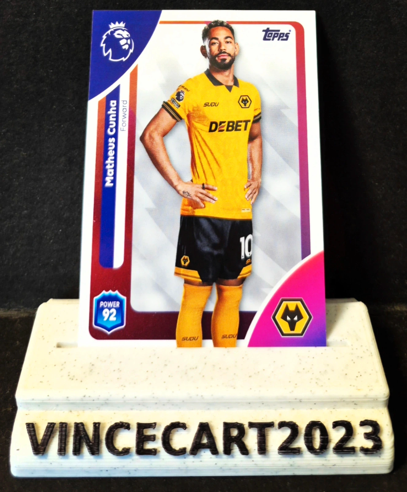

Carte Matheus Cunha – Wolverhampton Wanderers – Topps Premier League 2025/26 #303
1,25 €
Magnifique carte de Matheus Cunha, l'attaquant brésilien des Wolverhampton Wanderers, issue de la collection officielle Topps Premier League 2025/26.
📌 Joueur : Matheus Cunha
📌 Club : Wolverhampton Wanderers (Wolves)
📌 Numéro : #303
📌 Éditeur : Topps
📌 Saison : Premier League 2025/26
📌 État : Near Mint / Excellent état
✨ Joueur technique et spectaculaire, international brésilien.
✨ Carte officielle Premier League.
✨ Idéale pour les collectionneurs des Wolves, du Brésil ou des cartes Topps Football.
✨ Belle carte aux couleurs emblématiques de Wolverhampton.
📦 Carte conservée avec soin et expédiée sous sleeve
Disponibilité à confirmer sur Vinted.